Indica
Energizante y estimulante, ideal para el día. Perfecta para actividades creativas y sociales.
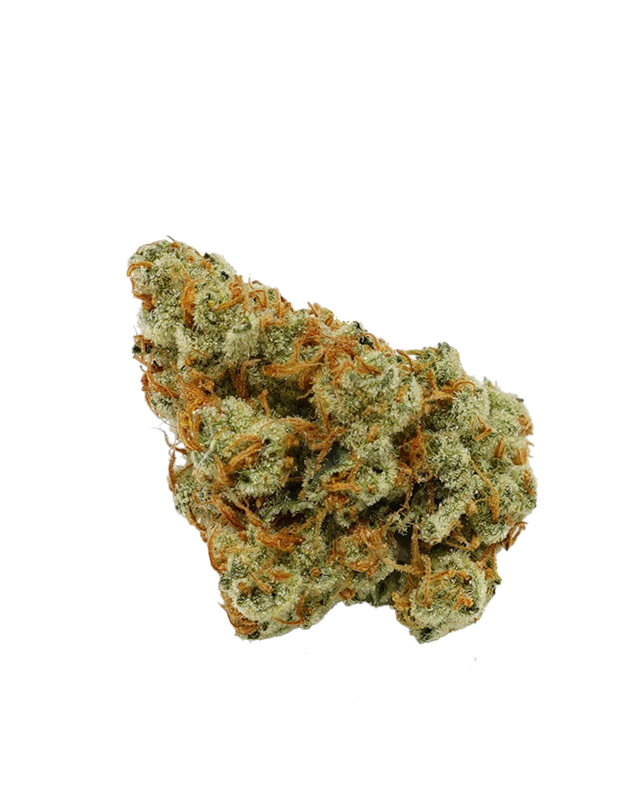Northern Lights
Una de las variedades índicas más icónicas, conocida por su efecto relajante profundo.
Seleccionamos las mejores variedades para ti.
Energizante y estimulante, ideal para el día. Perfecta para actividades creativas y sociales.
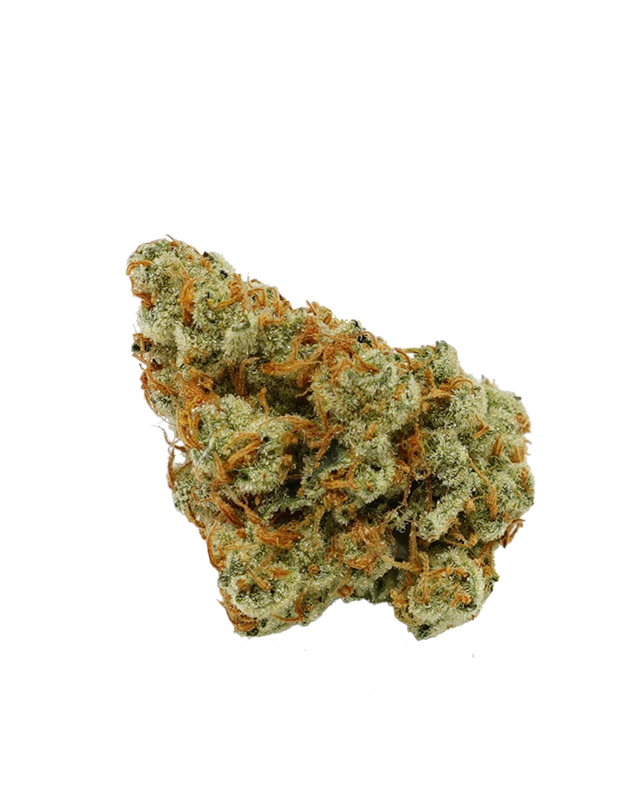Northern Lights
Una de las variedades índicas más icónicas, conocida por su efecto relajante profundo.
Relajante y calmante, perfecta para descansar después de un largo día.
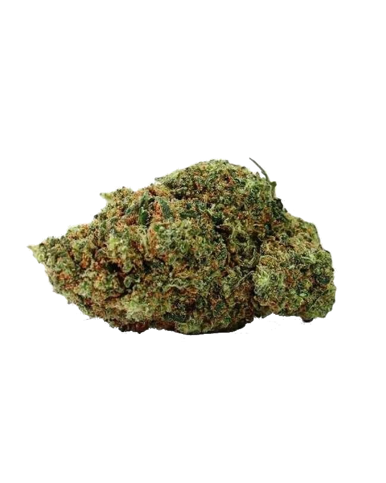Durban Poison
Una sativa pura con efectos energizantes y creativos, originaria de Sudáfrica.
Combina lo mejor de las variedades Sativa e Indica, ofreciendo equilibrio entre relajación y energía.
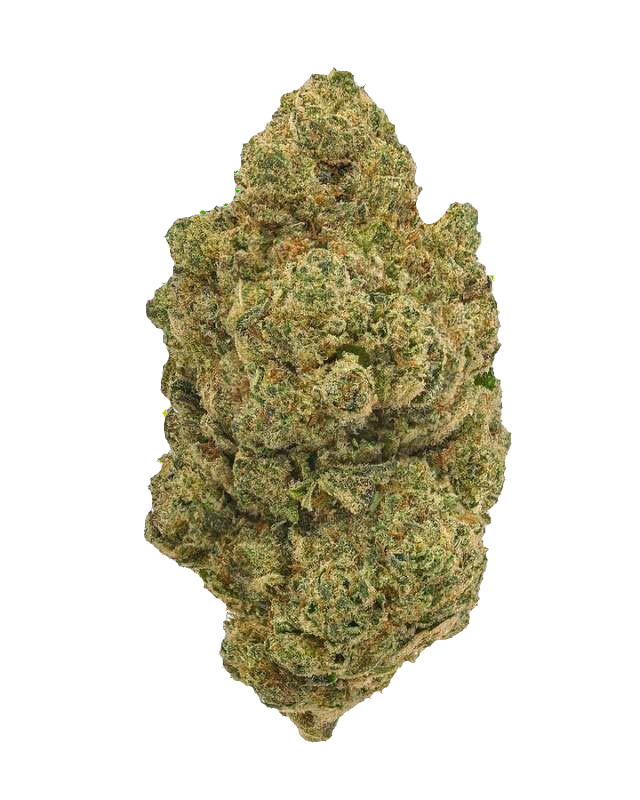Gelato
Una combinación equilibrada con un sabor dulce y efectos tanto relajantes como estimulantes.
Alta en cannabidiol (CBD) y baja en THC, ideal para usos terapéuticos sin efectos psicoactivos.
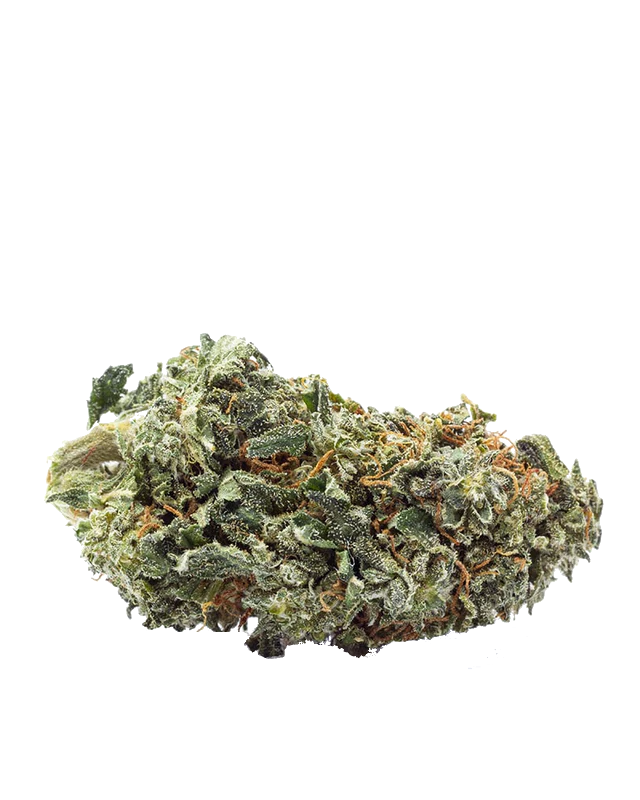Charlotte's Web
Variedad famosa por su alto contenido de CBD y bajo THC, utilizada para fines medicinales.
Variedades con alto contenido de THC, ideales para usuarios experimentados.
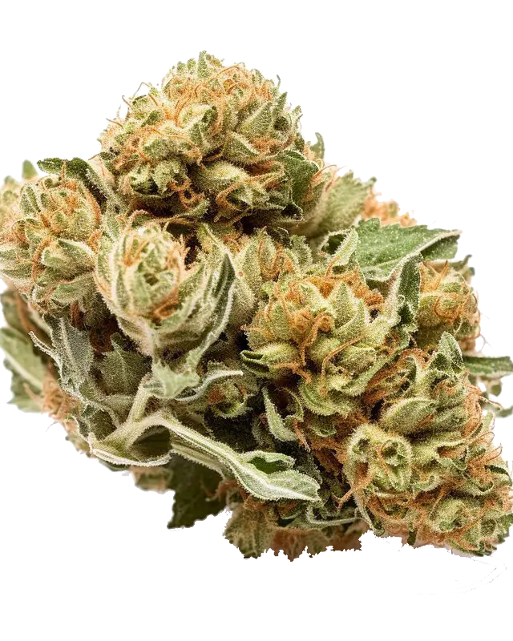Bruce Banner
Con niveles muy altos de THC, es conocida por su potencia y efectos cerebrales.
Florece automáticamente sin depender de ciclos de luz, ideal para cultivadores principiantes.
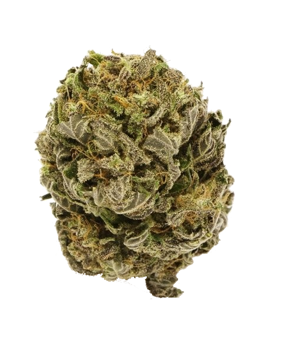Amnesia Haze Auto
Una versión autofloreciente de la clásica Amnesia Haze, fácil de cultivar y de ciclo corto.
Variedades puras y originales, adaptadas a su entorno natural.
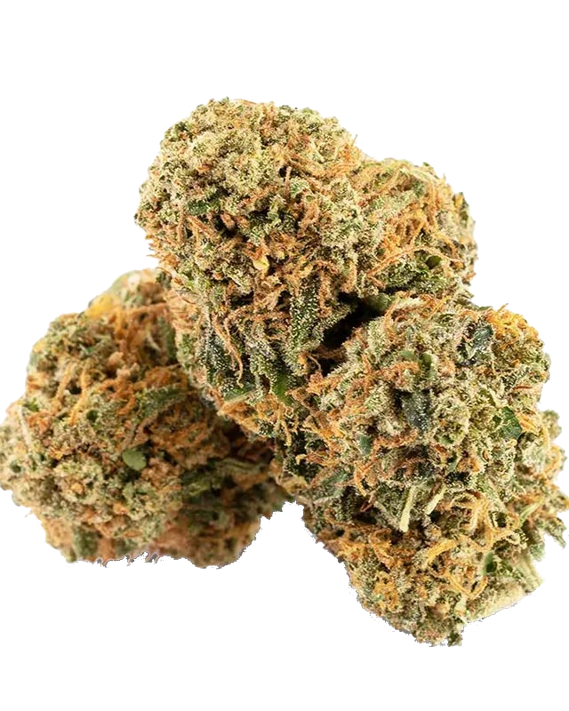Acapulco Gold
Una landrace legendaria de México, famosa por su calidad y sabor único.
Pureza y calidad en cada extracción.
Polen recolectado mediante tamices finos, ofreciendo una textura rica y concentrada.
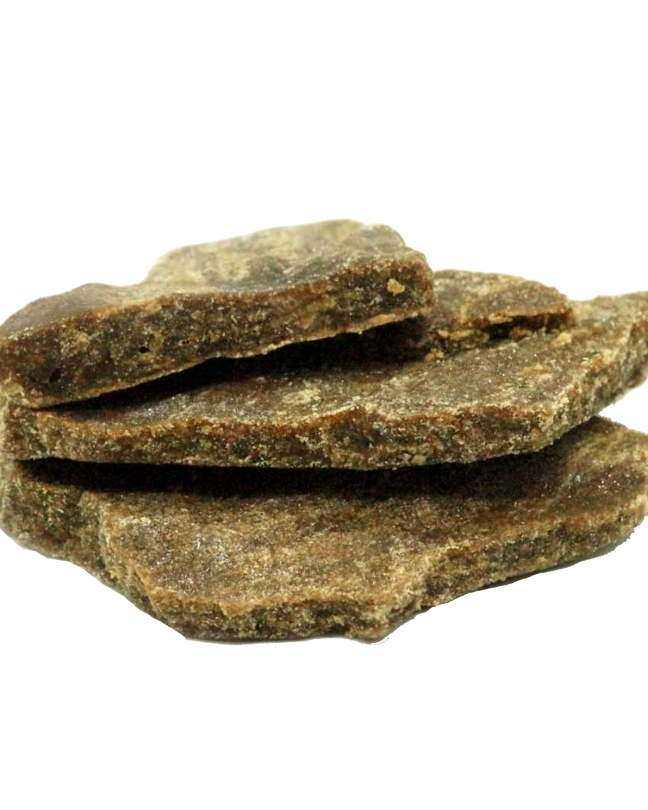Golden Sift
Representa el polvo de tricomas tamizado en seco con un aspecto dorado brillante.
Utiliza agua y hielo para separar los tricomas, obteniendo un polen de alta calidad.
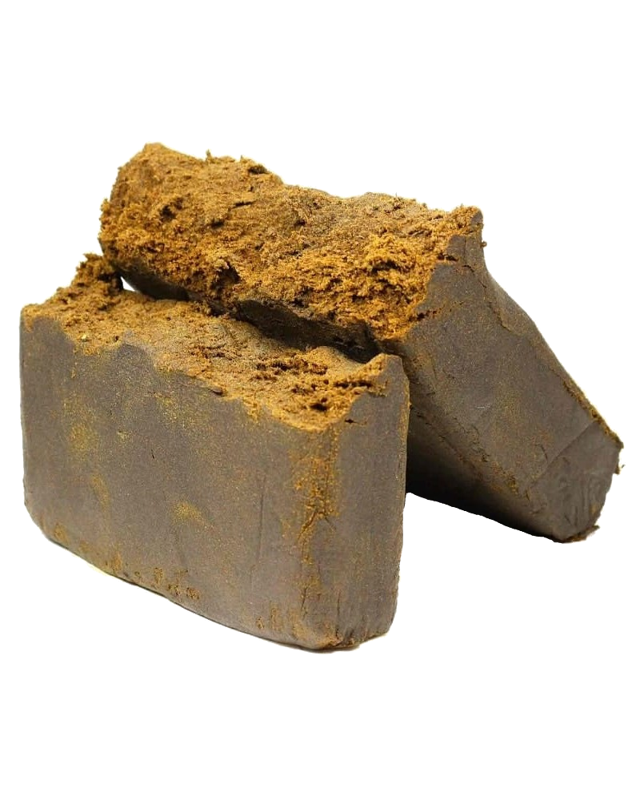Polar Bear
Evoca el proceso de separación con agua helada y la pureza de los tricomas extraídos.
Extracción sin solventes, que conserva los terpenos naturales para un sabor único.
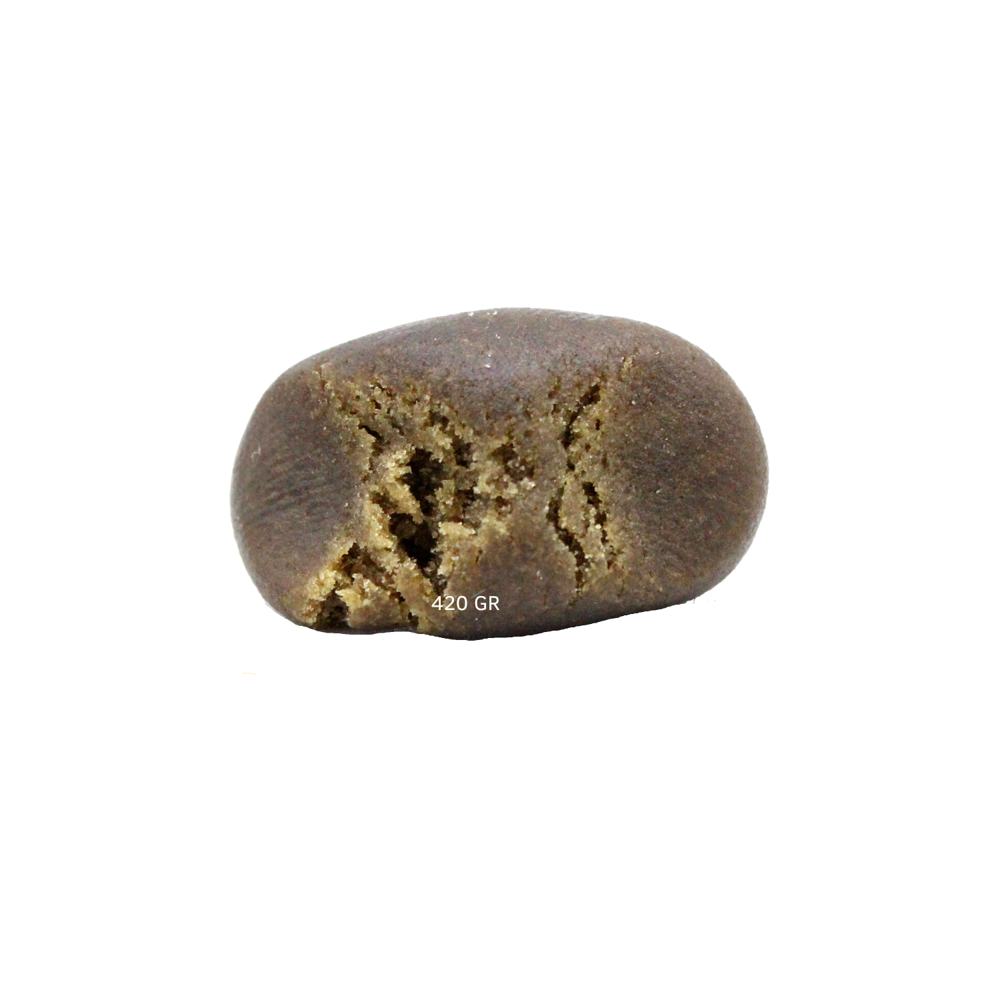Sun Press
Sugiere la extracción natural mediante calor y presión, como si fuera energía solar.
Obtenido con agua fría y bolsas de extracción, garantizando pureza y calidad.
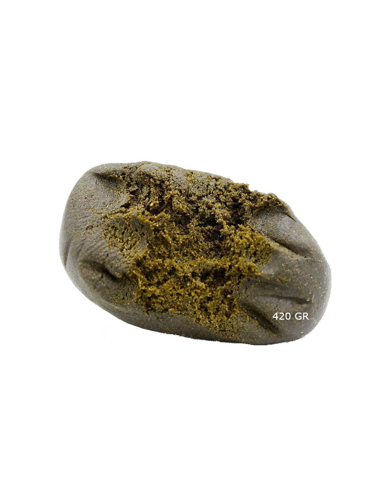Silver Bubbles
Resalta las burbujas de calidad que se forman al calentar este tipo de hachís.
Extracción con butano, que captura una alta concentración de cannabinoides.
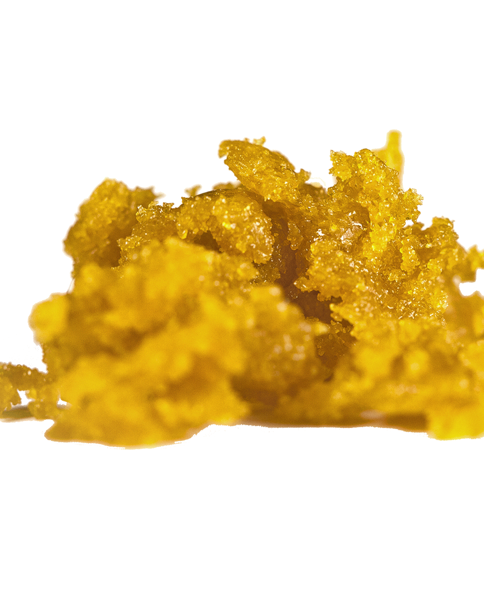Amber Oil
Un nombre que hace referencia al color ámbar típico de este concentrado.
Extracción de plantas frescas congeladas, conservando terpenos y sabor intensos.
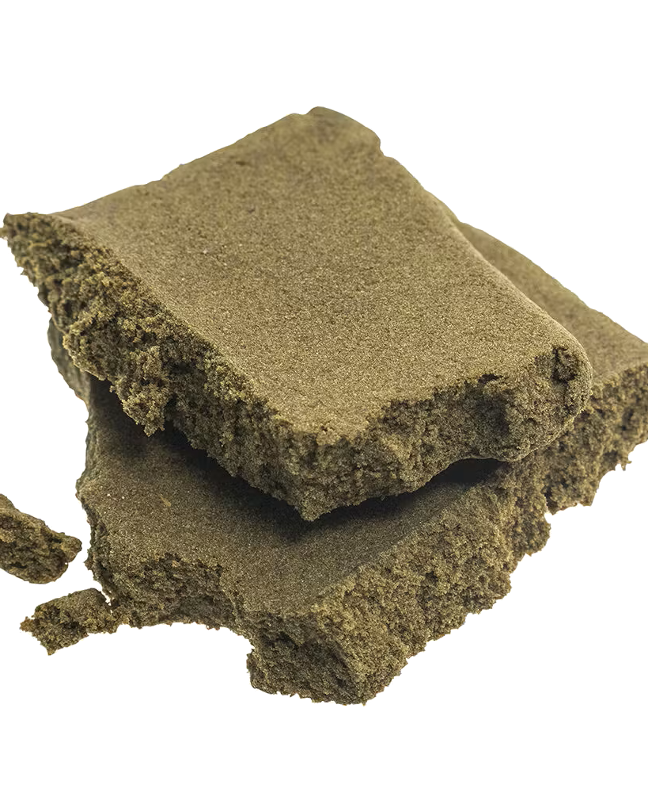Terra Frost
"Terra" hace referencia a la tierra y su origen natural, y "Frost" resalta la preservación y el frescor de los compuestos volátiles.
Tricomas recolectados del molido de flores, una extracción sencilla y efectiva.
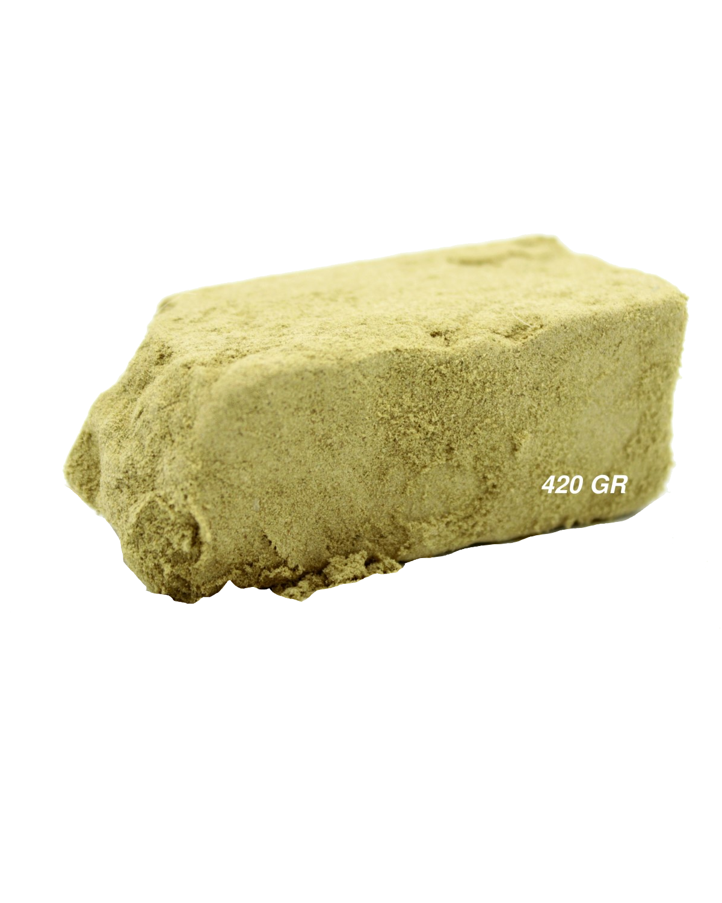Crystal Dust
Describe el aspecto polvoriento y brillante de los tricomas recolectados.
Testimonios de los miembros y eventos organizados por Naturaleza Y Un Gramo Más.